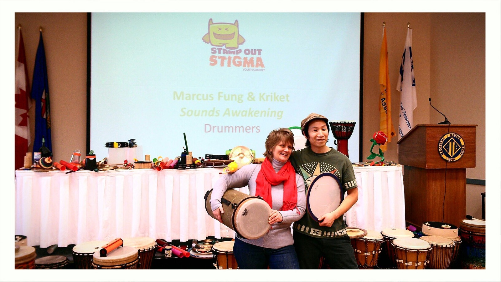

Home / Team building
Edmonton, Alberta
Team Building Drum Circles in Edmonton
Interactive rhythm for organizational teambuilding and corporate events — custom expressive events that create empowering, uplifting connections.

For teams
What your team gets
- Communication & listeningA groove only holds when people listen to each other.
- Trust & psychological safetyNo wrong notes. Everyone succeeds in the first minutes.
- Stress relief & energyPeople leave lighter, laughing and re-energized.
- Everyone leadsHierarchy flattens when the intern and the CEO keep the same beat.
Team building & corporate
Organizational teambuilding with a debrief
- team building
- corporate events
- organizational teambuilding with a debrief
- 60 or 90 min
- 10–60 people
- Indoor or outdoor
- Drums provided
- No experience needed
- Includes a debrief
Our approach
Why a facilitated drum circle?
A facilitated drum circle isn't a performance to watch or a tradition to learn. It's built around your group.
| Aspect | Traditional drumming workshop | Facilitated drum circle |
|---|---|---|
| Focus | Learning set rhythms and their culture | Your group's connection and goals |
| The music | Taught by an instructor | Created together by the group, guided by a facilitator |
| Experience needed | Practice helps | None. Everyone succeeds in the first minutes |
| What people leave with | Appreciation of a tradition | Listening, trust, leadership, belonging |
| Format | A set program | Custom to your goals, with a debrief |
How a team session runs
90 minutes
- Warm-up · arrive, rhythm games, everyone playing (10 min)
- Building the groove · one rhythm, created together (25 min)
- Leadership rotations · participants take the facilitator's spot (20 min)
- Creative challenge · call-and-response, small-group parts (15 min)
- Debrief · connecting the rhythm to how your team works (15 min)
- Closing rumble · one last big finish (5 min)
60 minutes
- Warm-up · rhythm games, everyone playing (10 min)
- Building the groove · created together (20 min)
- Leadership rotations · a few people take the lead (10 min)
- Debrief · what the circle shows about your team (15 min)
- Closing rumble (5 min)
What makes ours different
- Trained in Arthur Hull's drum circle facilitation methodology, blended with our own approach
- 20+ years and 1,000+ circles, from boardrooms to care homes to cancer care
- A therapeutic background: expressive arts therapy and Rhythm2Recovery, with trauma-informed practice
- Team-building debriefs that connect the rhythm to how your team works
- Every age and ability, no drumming experience needed
What the research suggests
- Burnout & mood. Research suggests a short group drumming program reduced burnout and improved mood in long-term care staff. Bittman et al., 2003
- Rhythm builds teams. Studies have found that people who move in sync cooperate more afterwards and feel more on the same team. Wiltermuth & Heath, 2009
- Older adults. Research suggests making music together, percussion included, supports mood, confidence and a sense of belonging in later life. Hallam & Creech, 2016
These are mostly small studies of group music-making, not studies of our sessions. Our circles are for wellness, connection and fun. They aren’t therapy or counselling, and they don’t replace professional mental health care.
Selected organizations
Teams we've drummed with
- Mental Health Commission of Canada
- Alberta Health Services
- City of Edmonton
- Federal Government of Canada Health & Wellness Day
- NorQuest College – Professional Development
- University of Calgary – Faculty of Social Work
- Catholic Social Services
- Natural Health Care Practitioners of Canada
Plan your team's drum circle
Tell us about your group and your event — we'll shape the circle around it.
More from drumAdrumDRUM